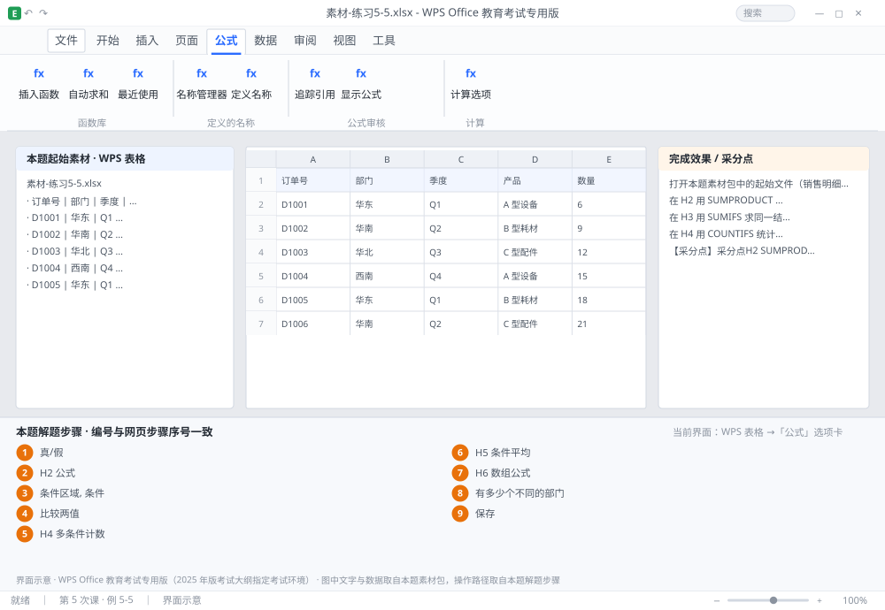

完成比对文档 · 例 5-5
多条件求和三种写法：SUMPRODUCT / SUMIFS / 数组公式 + 去重计数 ｜ 第 5 次课 / WPS 表格 ｜ 网页：实操-表格2.html ｜ 考试环境：WPS Office 教育考试专用版（2025 年版考试大纲指定考试环境）
用途 本页按修订后的题目要求与解题步骤生成，是交卷自查的结果基准：
逐项列出每一步应出现的可复核结果，配合模拟操作截图与解题结果文件使用。
它不是素材包的一部分，不会预置答案动作；起始素材仍从本题素材包下载。
一、本题起始素材包
目录：练习素材/练习5-5-多条件求和/ ｜
下载包：练习素材/下载/练习5-5-多条件求和.zip
二、题目要求
- 打开本题素材包中的起始文件（销售明细：A 日期、B 部门、C 产品、D 数量、E 单价、F 金额，共 20 行）。
- 在 H2 用 SUMPRODUCT 求「销售部」且「笔记本」的金额合计。
- 在 H3 用 SUMIFS 求同一结果，验证两法一致。
- 在 H4 用 COUNTIFS 统计「技术部」且金额 > 5000 的记录数。
- 在 H5 用 AVERAGEIFS 求「财务部」的平均金额。
- 在 H6 用数组公式求「笔记本」的最高金额（Ctrl+Shift+Enter）。
- 在 H7 用 SUMPRODUCT(1/COUNTIF(...)) 统计不同部门的个数。
- 保存为 学号-姓名-练习5-5.xlsx。
三、解题步骤（编号与下方核对表、截图编号一致）
- SUMPRODUCT 思路。把每个条件写成「真/假」数组，再与金额数组相乘：真=1、假=0，乘起来就把不符合的项清零了。
- H2 公式。=SUMPRODUCT((B2:B21="销售部")*(C2:C21="笔记本")*F2:F21) → Enter（普通回车即可）。注意三层括号：两个条件各一层，最外层是 SUMPRODUCT。
- H3 用 SUMIFS 验证。=SUMIFS(F2:F21,B2:B21,"销售部",C2:C21,"笔记本") → Enter。求和区域在最前，之后是「条件区域, 条件」成对出现。
- 比较两值。H2 与 H3 必须完全相等；不等说明条件拼写或区域范围不一致。
- H4 多条件计数。=COUNTIFS(B2:B21,"技术部",F2:F21,">5000") → Enter。条件里的 >5000 必须整体加英文双引号。
- H5 条件平均。=AVERAGEIFS(F2:F21,B2:B21,"财务部") → Enter。
- H6 数组公式。输入 =MAX(IF(C2:C21="笔记本",F2:F21)) → 按 Ctrl+Shift+Enter（不是普通回车）。成功后编辑栏会显示 {=MAX(IF(...))}，大括号是自动加的，不能手打。
- H7 去重计数。=SUMPRODUCT(1/COUNTIF(B2:B21,B2:B21)) → Enter。原理：每个部门出现 n 次就贡献 1/n，合计正好 1；把全部加起来就是「有多少个不同的部门」。
- 保存。Ctrl+S。
四、完成效果 / 采分点
采分点H2 SUMPRODUCT 多条件结果正确 · H3 SUMIFS 求和区域在最前且结果与 H2 一致 · H4 COUNTIFS 条件 ">5000" 写法正确 · H5 AVERAGEIFS 正确 · H6 数组公式有大括号（三键输入） · H7 去重计数结果等于实际部门数
五、逐项完成核对表
| 步骤 | 关键操作路径 | 应出现的结果（可复核） |
|---|
| 1 | SUMPRODUCT 思路 | 「真/假」 |
| 2 | H2 公式 | H2、=SUMPRODUCT(、B2:B21、C2:C21、F2:F21 |
| 3 | H3 用 SUMIFS 验证 | H3、=SUMIFS(、F2:F21、B2:B21、C2:C21 |
| 4 | 比较两值 | H2、H3 |
| 5 | H4 多条件计数 | H4、=COUNTIFS(、B2:B21、F2:F21 |
| 6 | H5 条件平均 | H5、=AVERAGEIFS(、F2:F21、B2:B21 |
| 7 | H6 数组公式 | H6、=MAX(、C2:C21、F2:F21 |
| 8 | H7 去重计数 | H7、=SUMPRODUCT(、B2:B21、「有多少个不同的部门」 |
| 9 | 保存 | 保存 |
六、模拟操作截图

界面示意 · WPS Office 教育考试专用版 · 橙色编号与本题解题步骤序号一致；
图中文字与数据取自本题素材包，功能入口取自本题解题步骤。
核对方法：按网页解题步骤完成并另存自己的成稿后，逐行比对本表第 3 列的
参数、公式、区域、文件名与对象数量；再对照网页「完成效果 / 采分点」检查版式是否一致。